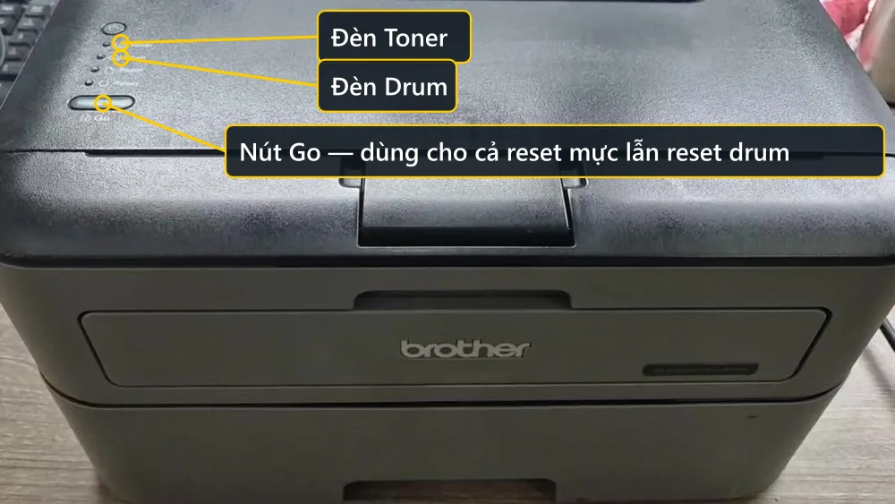
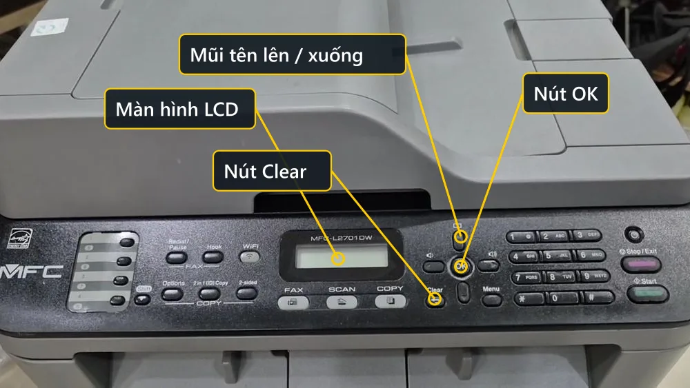

Cách reset máy in Brother — reset mực và reset drum khác nhau thế nào
Máy in Brother báo hết mực ngay sau khi vừa đổ mực đầy là chuyện gặp hằng ngày. Nguyên nhân không nằm ở mực mà ở bộ đếm trong máy. Nhưng trước khi bấm nút, phải trả lời hai câu: máy đang báo mực hay báo trống (drum), và máy của mình thuộc loại có màn hình hay chỉ có đèn. Trả lời sai một trong hai là bấm cả buổi không ăn.
máy in Brother là máy như thế nào
- Bộ đếm mực (toner) — nằm ở nhông bên hông hộp mực, đếm số trang từ lần đổ mực gần nhất. Máy báo Replace Toner, đèn Toner sáng.
- Bộ đếm trống (drum) — đếm tuổi thọ cụm trống, thường khoảng 12.000 trang. Máy báo Drum End Soon hoặc Replace Drum, đèn Drum sáng.
- Hai bộ đếm này độc lập với nhau: reset cái này không đụng gì tới cái kia.
- Cụm trống và hộp mực là hai món rời, tháo ra được — trống là khối to hình chữ nhật, hộp mực là thanh nhỏ gài bên trong trống.
Vì sao đổ mực đầy rồi máy vẫn báo hết mực
Máy in Brother không đo lượng mực thật trong hộp. Nó chỉ đếm số trang đã in kể từ lần reset gần nhất, thông qua một cái nhông gắn bên hông hộp mực. In đủ số trang nhà sản xuất đặt là nhông quay hết vòng, máy khoá lệnh in và báo hết mực — bất kể trong hộp còn bao nhiêu mực. Vì vậy đổ mực xong bắt buộc phải reset, nếu không máy vẫn không chịu in.
Khi nào cần reset máy in Brother
Loại 1 — máy chỉ có đèn LED, không màn hình
- Bảng điều khiển chỉ có đèn tròn và một nút Go, không có màn hình chữ
- Máy báo lỗi qua đèn sáng/nháy chứ không hiện chữ
Loại 2 — máy có màn hình LCD
- Bảng điều khiển có màn hình chữ nhỏ hiện tên máy hoặc trạng thái
- Có nút OK và phím mũi tên lên / xuống
Lưu ý trước khi làm
- Nhìn đèn nào sáng hoặc chữ hiện trên màn hình trước khi làm: đèn Toner → reset mực; đèn Drum → reset drum. Làm nhầm quy trình thì không ăn.
- Reset chỉ xoá con số đếm, không tạo ra mực. Hộp cạn thật thì reset xong bản in vẫn mờ.
- Máy báo Drum Error (khác Replace Drum), hoặc bản in có sọc đen lặp lại theo chu kỳ — đó là trống hỏng thật, reset không cứu được.
Loại 1 — máy chỉ có đèn LED, không màn hình — 4 bước
Gồm HL-L2321D, HL-L2320D và các đời HL laser đen trắng gọn. Bảng điều khiển chỉ có 4 đèn Toner / Drum / Paper / Ready và một nút Go. Vì không có màn hình nên máy không hiện chữ gì trong lúc thao tác — phải đếm số lần bấm.

-
Bước 1: Xác định đang cần reset mực hay reset drum
Đèn Toner sáng → reset mực. Đèn Drum sáng → reset drum. Hai quy trình khác nhau hoàn toàn.
-
Bước 2: Reset mực — tắt nguồn rồi giữ Go lúc bật lại
Tắt máy bằng nút nguồn (vẫn cắm điện), mở nắp trước lấy cụm drum và hộp mực ra, giữ Go đồng thời bật nguồn, thả Go sau 3–5 giây. Nhấn Go 9 lần, chờ 5 giây, nhấn Go 5 lần, chờ 5 giây, rồi lắp lại và đóng nắp.
-
Bước 3: Reset drum — để máy đang bật
Mở nắp trước khi máy vẫn bật, giữ Go khoảng 8–10 giây cho tới khi toàn bộ đèn sáng lên, thả tay, nhấn Go thêm 1 lần rồi đóng nắp.
-
Bước 4: Kiểm tra bằng đèn Ready
Đèn Ready sáng xanh, đèn báo lỗi tắt là xong. In thử một trang cho chắc.
Xem hướng dẫn chi tiết từng bước kèm ảnh cho dòng phổ biến nhất: reset máy in Brother HL-L2321D.
Loại 2 — máy có màn hình LCD — 4 bước
Gồm HL-L2361DN, HL-L2366DW, các dòng DCP và MFC. Bảng điều khiển có màn hình chữ, nút OK, phím mũi tên lên/xuống. Loại này dễ hơn vì có chữ hiện lên xác nhận từng bước.

-
Bước 1: Bật máy, đợi khởi động xong rồi mở nắp trước
Để máy bật bình thường, chờ màn hình hiện trạng thái sẵn sàng rồi mới mở nắp cửa trước.
-
Bước 2: Giữ nút OK cho tới khi màn hình hiện Drum Unit
Nhấn giữ OK khoảng 2 giây, màn hình sẽ hiện dòng Drum Unit. Bấm OK để chọn.
-
Bước 3: Chọn Reset trên màn hình
Dùng phím mũi tên lên để chọn Reset, rồi xác nhận. Màn hình báo đã reset xong bộ đếm trống.
-
Bước 4: Đóng nắp và kiểm tra
Đóng nắp trước, chờ máy trở về trạng thái sẵn sàng. Thông báo Replace Drum biến mất là được.
Với reset mực trên loại có màn hình, cách bấm nút Go giống hệt loại 1, chỉ khác là màn hình sẽ hiện chữ USER MODE khi vào đúng chế độ. Chi tiết: reset Brother HL-L2361DN / HL-L2366DW.
Câu hỏi thường gặp
Làm sao biết máy cần reset mực hay reset drum ?
Nhìn đèn hoặc chữ báo lỗi. Đèn Toner sáng hoặc máy tính báo Replace Toner là cần reset mực. Đèn Drum sáng hoặc báo Drum End Soon, Replace Drum là cần reset trống. Hai bộ đếm độc lập nên có khi phải làm cả hai, nhưng phải làm từng cái một.
Drum và hộp mực khác nhau chỗ nào ?
Cụm trống (drum) là khối chữ nhật lớn, bên trong có một trục tròn màu xanh lá hoặc xám — đây là bộ phận in hình lên giấy, tuổi thọ khoảng 12.000 trang. Hộp mực (toner) là thanh nhỏ gài vào trong cụm trống, chứa bột mực, hết thì đổ thêm. Trên dòng 2321D là cặp DR-2385 (trống) và TN-2385 (mực).
Reset máy in Brother có làm mất bảo hành không ?
Reset bộ đếm là thao tác nhà sản xuất thiết kế sẵn trên máy, bấm bằng nút có sẵn, không can thiệp phần cứng hay phần mềm máy. Việc này không làm mất bảo hành. Cái ảnh hưởng bảo hành là tự tháo máy, thay linh kiện không chính hãng hoặc làm hỏng vỏ.
Bấm sai số lần thì máy có sao không ?
Không sao. Bấm sai thì đơn giản là máy không nhận lệnh reset, đèn vẫn báo như cũ. Tắt máy rồi làm lại từ đầu, bấm bao nhiêu lần cũng không hại tới máy.
Đổ mực xong lần nào cũng phải reset à ?
Đúng, mỗi lần đổ mực hoặc thay hộp mực đều phải reset lại bộ đếm, vì máy đếm số trang chứ không đo mực. Trừ khi hộp mực mới có sẵn nhông reset chưa quay — loại đó lắp vào máy tự nhận, không cần thao tác gì.